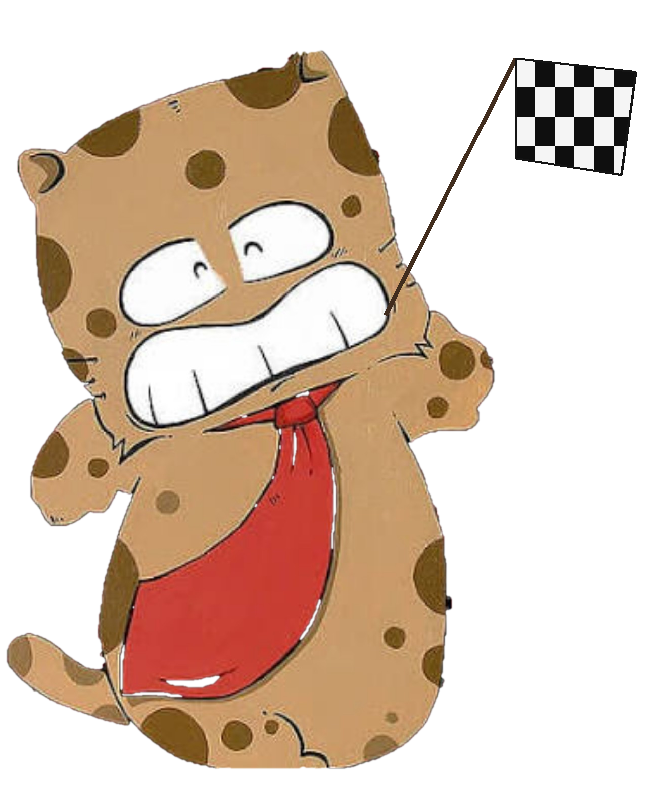
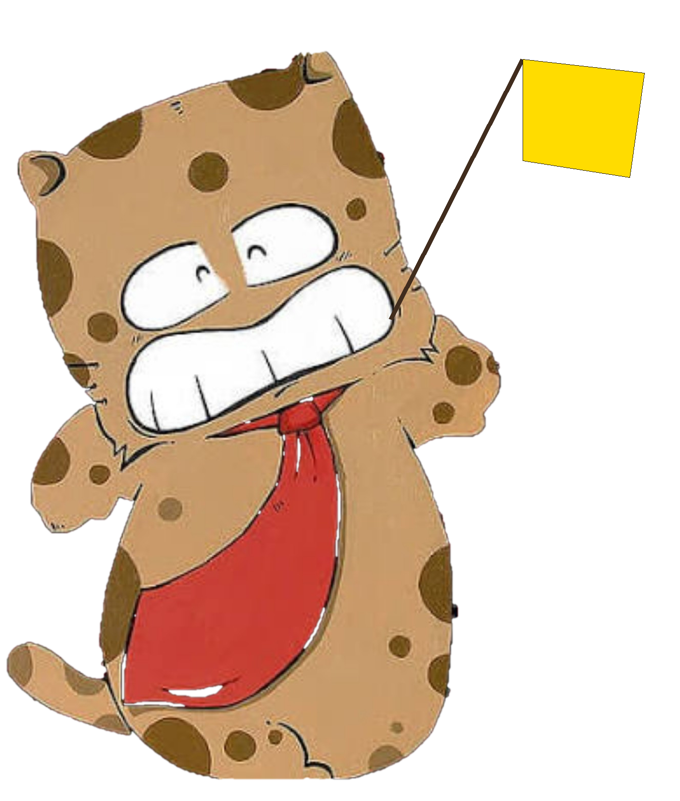

Analisi delle restrizioni conosciute lungo la rotta.
Prossime manovre
--
Preferenze
Schermo: auto
--
STRADA ATTUALE
--
KM ALLA TAPPA
--
KM RESIDUI
--:--
TEMPO ALLA TAPPA
--:--
TEMPO RESIDUO
--:--
ARRIVO TAPPA
--:--
ORA D'ARRIVO
NAVIGAZIONE HGV
Caricamento del percorso camion con altezza, larghezza, lunghezza, peso e carico per asse.
Prossima uscita
↗
--
--
MODALITÀ OFFLINE — percorso salvato
ETA adattivo --:--
Percorso
Guida
ON: premi il microfono una volta, poi dì “TORACHICHI” per attivare ogni comando.
Voce navigatore
Le voci disponibili dipendono dal motore TTS installato sul dispositivo.
Lo stile cambia davvero fraseggio e prosodia; gli avvisi di sicurezza restano sempre chiari.
Pausa
Traffico TomTom
Incidenti/chiusure dalla TomTom Routing API e Traffic Flow Orbis. La key viene salvata solo su questo dispositivo.
Traffico non configurato.
Diagnostica sistemi
GPS / strada--
Limite HGV--
Autovelox--
--
Servizi camion--
--
Divieto sorpasso HGV--
--
Database sicurezza--
Cache persistente locale
Aggiornamento manuale 9 Paesi · diagnostica Paese per Paese
Traffico TomTom--
--
Informazioni
--
GPS: attesa
Rete: --
Routing: --
Aggancio strada: --
GPS accuracy--
Velocità--
Heading--
Snap distance--
Route index--
Follow--
Off-route count--
Traccia reale attiva
PANORAMICA PERCORSO
Partenza · posizione · tappe · destinazione
🟢 Partenza🔵 Posizione🟠 Tappe🔴 Destinazione

ARRIVATEN A DESTINAZIONEN !!!!
Tocca l'immagine per chiudere

TAPPEN RAGGIUNTEN!!!
Ripartenza automatica tra 20 secondi
SERVIZI E POSIZIONI
Ricerca libera Geoapify: non è limitata al percorso corrente.
⛽ FILTRI CARBURANTE
CARTE ACCETTATE (selezione facoltativa)
Esclude accessi HGV esplicitamente vietati. Con una carta selezionata usa esclusivamente il database dedicato della rete: nessuna deduzione da nome o indirizzo Geoapify.